git is a free and open source distributed version control system
type "git" in command line and you will see the usage
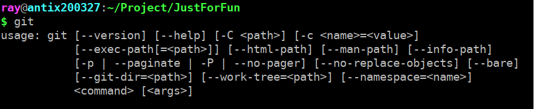git clone https://github.com/ray20140811/JustForFun.git
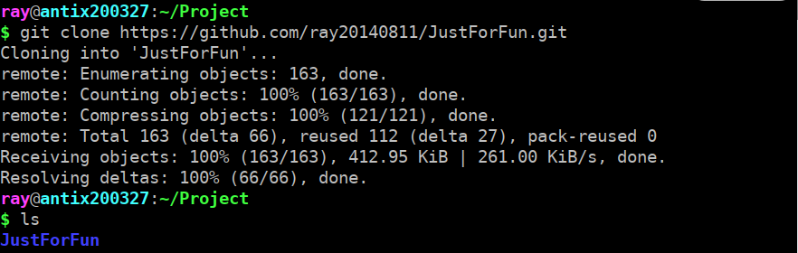touch hello.txt
git add hello.txt
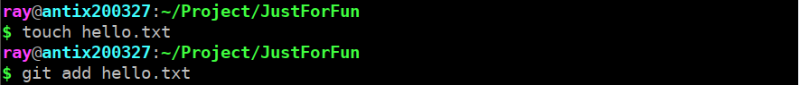git commit -m 'add hello.txt for test'
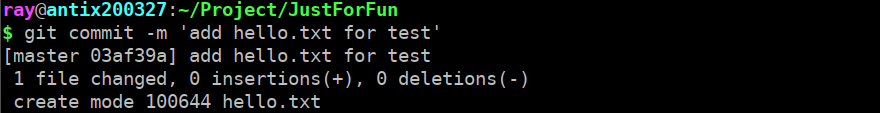git push origin master
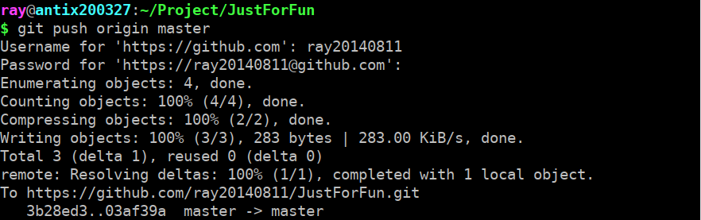git pull
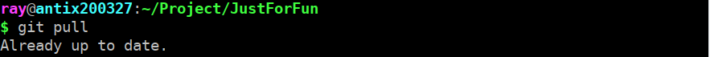git status
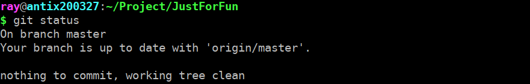git rm hello.txt
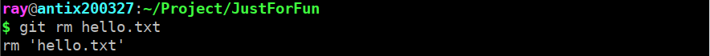git commit -m "remove hello.txt for test"
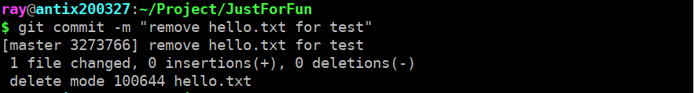git status
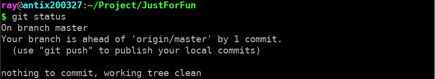git push
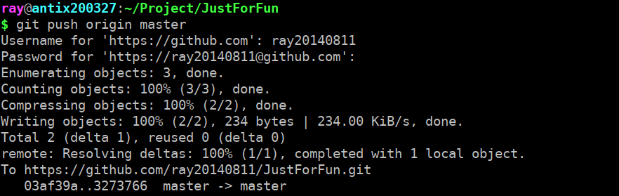